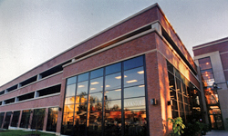

Parking Garage (Garden Park Plaza)
Address: 568 Garden Ave.
In the early years of Webster, few students owned cars. A streetcar stopped in front of Webster Hall on Lockwood Avenue and provided convenient service for the "dayhops" as commuter students were once called.
Enrollment at Webster increased steadily over time. The commuter population also grew and more students owned cars. Like many universities, Webster experienced an increased demand for parking.
The decision to build a parking garage was connected to another decision—the move to build a library on the main campus. Since the site of the future Emerson Library included a parking lot along Edgar Road, the university had to replace those lost spots. The new parking lot opened the last week in September, 2001, about a month before ground was broken for the new library. The structure cost approximately $6.5 million and provided 675 parking spaces.
The garage was expanded to add 550 more parking spots. The new section of the garage opened on May 2, 2017.
References
Favignano, Megan. (2012, October 24-30). Webster to nearly double size of garage. The Journal, vol. 66, no. 9, p. 1. (read the article)
Gaskin, Jenny. (2000, April 6). University gets first glimpse of new parking garage. The Journal, vol. 47, no. 10, p. 3.
Hansen, Jamie L. (2001, Sept. 6-12).Garage nears completion—three weeks left. The Journal, vol. 50, no. 3, p. 3.
Jobe, Amanda. (2001, Sept. 20-26). Garage nearly complete. The Journal, vol. 50, no. 5, p. 3.
Karins, Jessica. (2017, May 3). Parking garage expansion opens. The Journal. Retrieved from https://websterjournal.com/2017/05/03/parking-garage-expansion-opens/
Kiley, Gabe. (2000, February 10). Four-story parking garage at least three semesters away. The Journal, vol. 47, no. 3, p. 3.
Kranz, Tammy. (2001, May 3). Construction update: More projects are beginning, should move quickly. The Journal, vol. 49, no. 14, p. 3.
Kranz, Tammy. (2001, Oct. 4-10). Garage is opened. The Journal, vol. 50, no. 7, p. 1-2.
Kranz, Tammy. (2001, Aug. 23-29). Summer weather delays garage work. The Journal, vol. 50, no. 1, p. 1,4.
Linhardt, Adam. (2000, Sept. 21-27). Garage construction to begin. The Journal, vol. 48, no. 5, p. 1.
Mayo, Plesah. (2000, August 31-Sept. 6). Garage to break ground soon. The Journal, vol. 48, no. 2, p. 1-2.
Mayo, Plesah. (2000, August 17-23). Webster expansion moves forward. The Journal, vol. 48, no. 1, p. 1-2.
Muzslay, Leigh. (2000, Nov. 30-Dec. 6). Garage project grounded, Webster waits for permit. The Journal, vol. 48, no. 13, p. 1.
New parking garage needed to reduce congestion on campus. (1999, Spring). Webster World, vol. 4, no. 5, p. 39.
Schmitt, Tim. (1999, April 8). Multi-level parking garage slated for 2001 completion. The Journal, vol. 45, no. 11, p. 3.